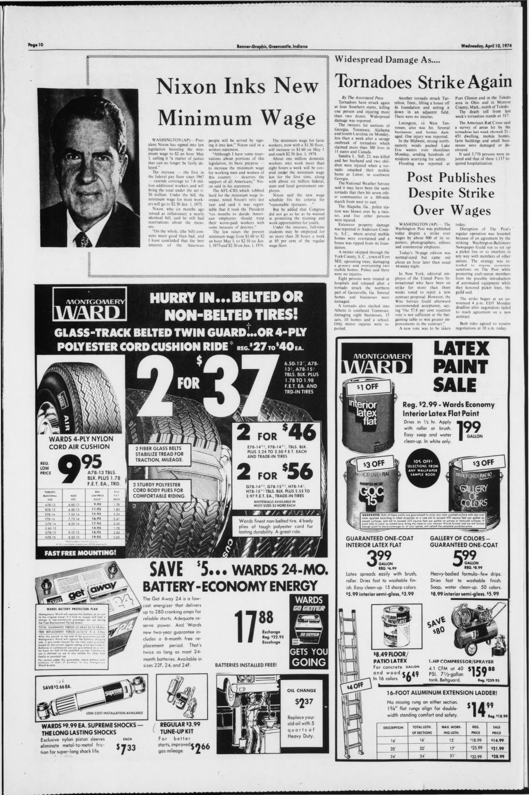

HN-698: Additional tornadoes strike before Super Outbreak recovery ends
HN-698 · April 10, 1974 · Disasters, Accidents & Emergencies > Hurricanes, Tornadoes, Dust & Severe Storms > Tornadoes

page image (archive tiles)Recorded finding
Discovery narrative
Source: Banner-Graphic, p. 10 — original page; NOAA, 1974 Super Outbreak.
Report: Under “Tornadoes Strike Again,” the paper noted renewed severe weather less than a week after the catastrophic outbreak that had taken more than 300 lives.
Assessment: Later context to HN-697, not a retrospective national fatality register. The headline's again refers to a subsequent weather event and should not be taken to mean every reported tornado belonged to the April 3–4 Super Outbreak. The broad casualty phrase is consistent with the major disaster, but detailed counts require defined dates and geography.
Original archive images (2)
Authentic images retrieved from Hoosier State Chronicles (Indiana State Library) and NewspaperSG (National Library Board, Singapore). Article crops are located using the archive's own OCR word coordinates and rendered at native crop resolution; article clips are assembled from the archive's own article-block images; page images marked "archive tiles" are stitched from the archive's own tiled page service at its 256-px tile cap; page images marked "issue PDF" are single pages rasterised from the archive's own issue PDF, with the page chosen by matching the headline against the PDF's text layer; page scans are reduced-size access renditions. No images were generated, mocked, or retouched.

Hoosier State Chronicles (Indiana State Library)
Open larger view · Archive viewer (full resolution)

NewspaperSG (National Library Board, Singapore)
Open full-resolution clipping · Archive viewer (full resolution)
Source acquisition
Status: Archive images acquired
Authentic archive-owned image renditions were retrieved for this record and are displayed above. The source-acquisition manifest preserves the original pre-acquisition feasibility assessment.
Original seed
URL (preserved verbatim): https://newspapers.library.in.gov/?a=d&d=BG19740410-01.1.10
Saved research report: Historical_Newspaper_Event_Research_678-702_2026-10-23.md
Evidence note: A newspaper report means a historical publication made a claim; it does not establish that claim as fact. Contemporary reporting is separated from later scholarly context and our own assessment.